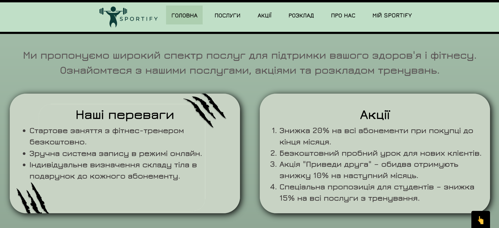

1. Inline-стилі (Вбудовані стилі)
Цей метод дозволяє додавати стилі безпосередньо до HTML-елементів за допомогою атрибута style. Кожен елемент стилізується окремо, що робить цей підхід зручним для локальних або одноразових змін.
Приклад:
<p style="color: red; font-size: 16px;">Цей текст червоний і має розмір 16px.</p>Цей текст червоний і має розмір 16px.
Приклад (з коду сайту):
<p style="color:#ffffff; font-size:large">Ознайомтеся з описом нашої предметної області на <a style="color:rgb(254, 134, 59)" href="https://dvladyslav.github.io/IS-31_Driuk_Description_subject_area/">цій сторінці</a>.</p>
Зображення:
Переваги:
- Легкість у використанні для окремих елементів.
- Не потребує окремих файлів стилів.
Недоліки:
- Погано підходить для великих проєктів.
- Важко підтримувати та змінювати стилі в майбутньому.
- Може призвести до дублювання стилів.
2. Internal-стилі (Внутрішні стилі)
Стилі визначаються всередині HTML-документа в секції <head> за допомогою тегу <style>. Цей підхід використовується, коли стилі потрібні лише для одного HTML-документа.
Приклад:
<!DOCTYPE html>
<html lang="uk">
<head>
<meta charset="UTF-8">
<title>Приклад</title>
<style>
p {
color: blue;
font-size: 18px;
}
</style>
</head>
<body>
<p>Цей текст синій і має розмір 18px.</p>
</body>
</html>
Цей текст синій і має розмір 18px.
Приклад (з коду сайту):
<style>
p {
color: #5E5959;
font-size: xx-large;
font-weight: bold;
}
h1 {
color: rgb(0, 0, 0);
font-weight: bold;
}
</style>
Зображення:
Переваги:
- Стилі знаходяться в одному місці разом з HTML-кодом.
- Можна застосовувати стилі до кількох елементів на сторінці.
Недоліки:
- Стилі застосовуються лише до одного документа.
- Зростає розмір HTML-документа, що може вплинути на час завантаження сторінки.
3. External-стилі (Зовнішні стилі)
Цей метод передбачає підключення зовнішнього CSS-файлу до HTML-документа за допомогою тегу <link>, який розміщується в секції <head>. Зовнішні стилі підходять для великих проєктів, де один файл стилів використовується для кількох сторінок.
Приклад:
index.html
<!DOCTYPE html>
<html lang="uk">
<head>
<meta charset="UTF-8">
<title>Приклад</title>
<link rel="stylesheet" href="styles.css">
</head>
<body>
<p>Цей текст буде стилізований за допомогою зовнішнього CSS.</p>
</body>
</html>
style.css
p {
color: green;
font-size: 20px;
}
Приклад (з коду сайту):
<head>
<meta charset="UTF-8">
<meta name="viewport" content="width=device-width, initial-scale=1.0">
<!-- Google font -->
<link href="https://fonts.googleapis.com/css?family=Jura:300,regular,500,600,700" rel="stylesheet">
<!-- Slider by w3schools -->
<link rel="stylesheet" href="https://maxcdn.bootstrapcdn.com/bootstrap/3.4.1/css/bootstrap.min.css">
<script src="https://ajax.googleapis.com/ajax/libs/jquery/3.7.1/jquery.min.js"></script>
<script src="https://maxcdn.bootstrapcdn.com/bootstrap/3.4.1/js/bootstrap.min.js"></script>
<link rel="icon" href="images/favicon.ico" type="image/x-icon">
<link rel="stylesheet" href="./style.css">
<title>SPORTIFY | СПОРТ-КОМПЛЕКСИ</title>
</head>
Зображення:
Переваги:
- Легко підтримувати і оновлювати стилі.
- Один файл CSS можна використовувати для багатьох сторінок.
- Менший розмір HTML-документа, що прискорює завантаження сторінки.
Недоліки:
- Потрібно окремо завантажувати файл CSS, що може дещо сповільнити перший рендер сторінки.
4. Підключення CSS через @import
Стилі можна підключати до CSS-файлу або HTML-документа за допомогою директиви @import. Вона дозволяє імпортувати інші CSS-файли всередині CSS-файлу або в <style> -блоці в HTML.
Приклад:
@import url('styles.css');
@import url('another-styles.css');
body {
font-family: Arial, sans-serif;
}
Переваги:
- Можливість розбивати стилі на кілька файлів для кращої організації.
Недоліки:
- Завантаження сторінки може бути повільнішим, оскільки імпортовані файли завантажуються пізніше основного файлу CSS.